エッセイ
牧場の川、ビーチサンダルと少年
ニュージーランドは盛夏であった。とある１月の金曜日、僕と川本君を案内してくれることになったガイドさんは、ある川沿いの農家に挨拶して釣りの許可をもらった後で車を空き地に停め、僕たちに釣り支度をするように促してから、自分の釣り具を持ってすぐ近くの橋まで偵察に向かった。
オリーブ色のハット、年季の入ったカーキ色のフィッシングベスト、淡い迷彩模様の半袖シャツ、青色のデイパック、そして足回りは驚くべきことに、ピンクっぽい膝丈のショーツに、アウトドア用では無く、裏にフェルトが貼ってあるわけでもない、ごく普通のビーチサンダルであった。
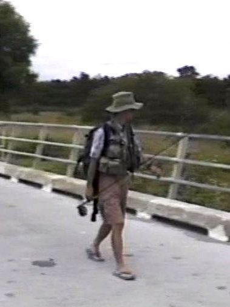
そのスプリングクリークは、実に魅力的な川だった。僕のホームグラウンドであるワイカト地方のスプリングクリークは、最上流部の一部区間を除いて勾配がきつく、流速が速い。この川は大きく蛇行しながらごくゆっくりと流れ、澪筋は複雑に入り乱れており、至る所に藻が繁茂し、釣るのが難しそうな川だった。行ったことは無いけれども、イングランドの有名なイッチェン川などは、まさにこんな雰囲気なのだろうなと思わされた。
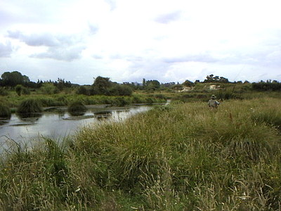
雲が多く、サイトフィッシングにはあいにくの天気だったが、ありがたいことに風は無く、ムシムシと暑く、３人して橋から眺めていると、そこここでライズが見られた。ガイドさんが知っている数ある川の中でも、特にお気に入りの川だということだった。そのガイドさんの名前は、斉藤完治さんと言った。
2002年の1月、古くからの釣友である川本君が、忙しい業務を何とかやりくりして１週間の休みを取り、ハミルトンで留学生活を送っていた僕を訪ねてくれた。さっそくかねてから練り上げていたプランに基づいて、ワイカト近郊のスプリングクリークを２日、絶壁のゴルジュが延々と続くことで有名なランギティキィ川で１日釣り、帰途、タウポ湖近郊にお住まいの斉藤さんからお招きにあずかり、一晩ご自宅に泊めていただき、今日は１日、お気に入りの川を案内してくださることになったのだ。
僕が初めて斉藤さんのことを知ったのは、1987年、新婚旅行でグアム島を訪れた僕の次兄が、帰りの便の機内誌に斉藤さんの記事が載っていたのを読んで、僕に話してくれたのだ。
「剛、世の中にはそんな人もいるんだなぁ...」
当時、ウェットフライでのアマゴ・イワナ釣りに血道を上げていた次兄は、遠くを見るような目で、僕にうらやましそうに語ってくれたのだった。
しかし、おぼろげな記憶では、あれは長兄だったような気もするのだが、長兄が結婚したのは1984年、斉藤さんがニュージーランドに渡られたのは1986年だから、つじつまが合わない。やはりあの話は次兄がしてくれたのだろう。
僕は1989年にようやく大学を卒業し、名古屋の建設コンサルタント会社に就職した。会社の後輩の川本君と意気投合し、毎週末の渓流詣でが始まっていた。世はバブルの末期、僕にもフライフィッシングの道具が買えるようになり、４番ロッドで春から秋の渓流を、６番ロッドでは冬場の管理釣り場での釣りを楽しんでいた。
緊縮財政下にある今となっては考えられないことだが（笑）、当時はフライフィッシング関連の雑誌を毎月欠かさず買っており、よく斉藤さんの記事が掲載されていた。
その後、僕は1997年に念願だった海外釣行、ニュージーランド南島への初釣行を果たし、98年には川本君と再訪した。そして10年勤めた会社を辞め、99年5月からニュージーランドでの留学を始めた。まずはオークランドの語学学校で９ヶ月間英語を集中的に学び、ワイカト大学になんとか入学することができて、2000年の３月にハミルトンに引っ越した。日本から個人輸出した日産・パルサーも無事着いて、勉学の傍ら（実際は逆）近郊に釣りに行けるようにもなった。
そうこうしているうちに、2000年の７月頃、インターネットの検索で斉藤さんのホームページ「TROUT BUM」を探し当てて、大胆かつ、ぶしつけにもいきなりメールを送ってしまったのだった。
斉藤 様 初めまして。突然のメールで失礼いたします。
私は現在ハミルトンにあるワイカト大学で環境科学を専攻している伊藤 剛と申します。
斉藤様のことは、９年ほど前より、旅行代理店のパンフレットや雑誌の記事で存じ上げておりました。
最近、Trout Bum のＨＰを拝見させていただいて、メールアドレスを知ることができましたのでメールを書いている次第です。本来であれば手紙でご挨拶いたすべきところですが、お許し下さい。
私は、1999年まで名古屋で土木・環境関係の調査コンサルタント会社に10年ほど勤めた後、河川・淡水の生物、あるいは生態学を再度学びたいと思って留学を始めました。ハミルトンにはこの３月より住んでおります。
大学では、湖沼学、淡水の生態学、淡水生態系のマネージメント、水文・水理学などを学んでおり、おそらく論文としては、ニュージーランド在来魚の遡上改善のための魚道設計をテーマにする予定です。順調にいけばあと２年のコースです。
斉藤様のＨＰでは、水生昆虫の話とか、日記などを楽しく読まさせていただいております。ワイカト大学の図書館には、ニュージーランドを初め、カナダ、アメリカ、ヨーロッパなどの学術雑誌、専門書が多く備えられており、鱒関連の文献なども豊富に閲覧できますので、ハミルトンを通過することがありましたらぜひご連絡、お立ち寄り下さい。図書館をご案内いたします。コピーもできます。また、同じ構内に、NIWA（The National Institute of Water and Atmospheric Research or NIWA, is a Crown Research Institute of New Zealand）の研究所もあります。
釣りの方では、97年と98年にニュージーランド南島西海岸地方を訪れております。最近は、ハミルトン周辺のあまり名もない川を中心に釣っております。
突然のメールですが、まずはお見知りおきください。
今後ともよろしくお願いいたします。
ありがたくも驚くべきことに、斉藤さんは、その日のうちに、
「また、もしツランギ方面に来ることがあったら、ぜひお立ち寄りください。たいしたおもてなしもできませんが、ワインならありますので。
それでは、季節がら、風邪などに気をつけてください。」
と、暖かい返信を下さった。
その日以降、斉藤さんとは頻繁にメールでのやりとりをさせていただいた。その頃すでにフィッシングガイド業は辞められ、雑誌への記事執筆、TVロケなどのアシスタント、業務翻訳など、多忙な日々を送られていた斉藤さんとは、パソコンの話題（偶然２人とも Mac を使っていた）や、今は懐かしいネットスケープ：NetScape というブラウザの文字化け問題解決法、英語辞書のCD-ROMなどの話題で盛り上がった。前述の通り、斉藤さんは当時日本の釣り雑誌によく原稿を書かれていたし、僕もキャッチアンドリリース後の生存率の研究などに興味を持っていたので、参考になりそうな論文をコピーして互いに送付し合ったりした。また、NZの釣りのレギュレーションの解釈、翻訳の件などについての意見交換もした。
当然、釣りの話題でも盛り上がり、斉藤さんがフィッシングガイドとして経験したエピソードの数々を伺うことが出来た。
マオリの凄腕フライフィッシャーの秘技、ヘビーシンキングラインを湖の底深くに沈め、ほったらかしておくと、少々浮いたエッグフライに鱒が喰い付くとか、山岳渓流で友人が釣り上げた小さなレインボーに喰いついた大ウナギの話、ツランギ周辺のガイドの情報などなど。
一番面白かったのは、斉藤さんはあの頃、「ワイタハヌイ派」というフライフィッシングの一流派を興し、オークランドのＮさんが続き、僕を３人目に加えていただいたことだった。さて、「ワイタハヌイ派」とはいったいどんな流派かと言うと、タウポ湖東岸に注ぐ支流に Waitahanui River という川が有り、小さい川ながら大きな鱒が釣れることで有名なのだが、その川に集う何人かのマオリ系のアングラーは、ガイドが二つ三つ取れているようなフライロッドと、穴の空いた農作業用長靴（現地ではガムブーツと呼ぶ）という格好なのだそうである。しかし、彼らの釣りの腕は抜群で、掛けて寄せてきた大鱒をゴム長靴で岸辺に蹴り上げてから、おもむろにキープするという姿に感銘を受けた斉藤さんが一流派を興されたのであった。僕もタウポ近辺の川で、そういった感じの釣り人に何度か会った経験がある。（笑）
バブルが弾け、長いデフレの時代が続き、個人的にも緊縮財政が続いている僕としては、あの「ワイタハヌイ派」という概念？ 定義？ 流派を懐かしくも切実に思い起こしている。
さらに斉藤さんからは、あまりに効き過ぎるために、友達の間では「禁じ手」にしているという必殺のフライを、釣り方と一緒に教えて頂いたりもした。
また、僭越にも斉藤さんに今後ぜひ出して頂きたい本のアイデア・内容などをリクエストしたこともあった。
そして、2001年の１月に、オークランドの語学学校で知り合った、編集者・ノンフィクション作家である植田紗加栄さんと一緒にタウポを訪れた。
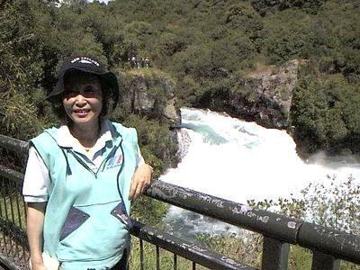
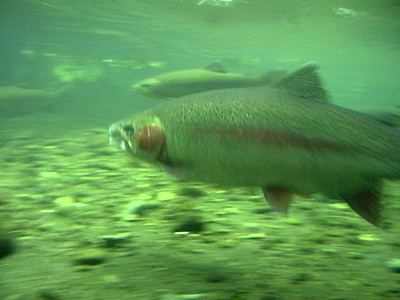
その際、初めて斉藤さん宅にお邪魔して、お会いできたのであった。自力で建てられたという立派な二階建ての住宅に案内され、奥様、愛犬・愛猫ちゃんたちからも暖かいお持てなしを受けて感動したのであった。
斉藤さんの仕事部屋には中くらいの水槽があり、採集されてきた様々な水棲昆虫が飼育されていた。ホームページにて詳細な観察と研究の様子を拝見していた僕は、これがあの水槽なのだなぁ！と感激した。
2001年８月頃、ハミルトンの僕の住まいに、直筆のサインと由緒ある篆刻が二つ押された１冊が贈られてきた。斉藤さんの初の著書である「巨大鱒に魅入られてニュージーランド暮らし ― 日本人フィッシングガイドの快楽と憂鬱」がつり人社から出版されたのだった。
画像は斉藤さんのサイトより引用
さっそくお礼のメールを送信し、噛みつくような勢いで読み進めた。86年以来、さまざまなご苦労をされたのだなぁと、あの陽気な笑顔の裏にある苦闘の日々を知って、深く唸らされた。
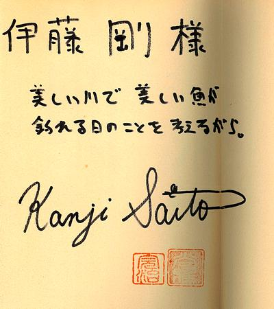
その後、2001年の９月には、ベルギーからの留学生だったセバスチャン君とのトンガリロ川釣行の帰途、斉藤さん宅にご挨拶に伺った。その頃、斉藤さんは腰を悪くされており、僕が知っていたタウランガ在住の鍼灸師の情報をお知らせしたこともあった。
そして2002年の１月に、僕と川本君がタウポを通過して南へ下り、ランギティキィ川を釣る予定ですとメールすると、斉藤さんは
「ぜひ帰途には友人の方と拙宅にお泊まり下さい」
と、またまた有り難いお招きをしてくださり、遠征の帰途、タウポ湖畔の斉藤家に一泊し、翌日はお忙しい中、釣りの案内をしていただくことになったのだった。
さて、話はスプリングクリークでの釣りに戻る。
僕たちは斉藤さんに案内され、農道の橋から牧草地に歩み込み、しばし川を目指して歩いて進んで行った。僕はビデオカメラをスタンバイして２人の後をついて行く。
「ビーチサンダルじゃぁ、草がチクチクして痛いんじゃないのかなぁ.....」
斉藤さんは、ロッドを手にした ”永遠の少年” といった雰囲気で、委細気にせずズンズンと牧草地を進んで行く。
そして、曇り空ではあったがライズは見られたので、川沿いを慎重に偵察しながら「僕たちに」キャスティングできそうな場所へと案内してくれた。
僕が後方からビデオを撮影していると、遠くで川本君がラインをロッドに通し準備を始めた。ふと、カエルの鳴き声が聞こえてきた。ニュージーランドでカエルが鳴くのを聞いたのは初めてだったので意表を突かれた想いで斉藤さんに尋ねると、トノサマガエルほどの大きさのカエルが棲んでおり、オタマジャクシのイミテーションが鱒たちに良く効くとのことであった。
やがて準備を整えた川本君が、慎重に水辺に降りて第一投を始めた。
「もう少し前に出てもいいですよ」
と言う斉藤さんのアドバイスを受けて川本君が数歩、流れに歩み込む。
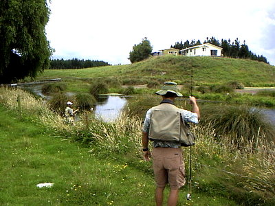
彼の狙っているライズのわりと近くで、別の大きなライズが起こる。パシャリと言う音まで聞こえた。
川本君は、最初に狙いを付けた鱒を見事ストライクさせ、藻に潜られて苦戦しつつも何とかキャッチした。30cmクラスの１尾だった。しかしすぐ横でライズしたのはもっと大きいようだった。（笑）
斉藤さんは、デイパックから商売道具であるプロ用のモータードライブの付いた一眼レフを取り出し、僕たちの写真をたくさん撮して下さった。
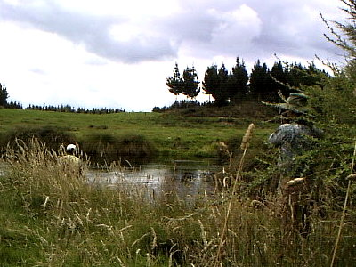
続いて斉藤さんが、50～60cmクラスがウロウロしているのを見つけて位置を教えてくれた。今度は僕の番となり、かなりシビアな選択眼を持っていそうなここの鱒に対して、地元ワイカトのスプリングクリークでは活躍してくれた既製品の16番、焦げ茶色のアダムスを試してみた。キャストとナチュラルドリフトに苦労したが、まぐれで掛けることに成功した。大きな鱒に主導権を奪われ、上流へ下流へと思うように走られる。しかし、何故か今日はランディングネットを背中に付けていない！
結局その１尾は、取り込めなかったのかもしれない。ビデオの録画は途中で切れているし、記憶にも無い。
さて、露払いである私たちの番が終わり、いよいよ真打ち登場となった。斉藤さんが草地に立ってラインを引き出し、おもむろにキャストを始める。白っぽい大きめのドライフライを結んでいる。大きく、素早いダブルホールの動作、高いバックキャスト、ダウンクロスの角度で高い位置を狙ってフィニッシュし、シュートの距離をかせいでいるように見えた。かなり遠くのライズを狙ったようだったが、残念ながら反応は無く、今度はアングルを変えて、斜め上流へ繊細なプレゼンテーションでフライを落とす。こちらも水面は沈黙のままだった。
交代した川本君が、少し下流にあったカーブで見つけたライズを狙ってみることになった。藻がいっぱいで、ドリフトしてきたフライがすぐに引っ掛かって苦労していた。このライズも取れず、斉藤さんが次のライズを狙った。
見事その１尾を掛けるが、残念ながらバレてしまった。しかし、斉藤さんのキャスティングを見ていると、腕の筋肉の鍛錬の度合が違うなぁと感心させられた。おそらくは６番程と思われるロッドをぴゅんぴゅんと軽く振りきる姿は、体躯のはるかに勝るホキティカの大男、ディーン・トロレイ君を彷彿とさせるものがあった。
斉藤さんが遠くのライズを目ざとく見つけ、当然ながら自らタイイングされた、トンボを模した赤茶色の大きなドライフライに結び替えた。長年にわたる熱心な水生昆虫の観察と創造的なタイイングから生み出されたそのイミテーションを見た時の僕の正直な感想は、
『本当にあれで釣れるのかなぁ.....』
と半信半疑だった。はるかなライズ目がけての遠投は、ダブルホールでの腕や体の伸びがとても美しかった。そして、フォルスキャストの最中に回転することもなく、ふわりと水面にプレゼンテーションされたその大きなドライフライに、スプリングクリークのレインボーが疑うことなく喰いついたのだった。
斉藤さんの釣りを見たあとでは、僕がこれまで行ってきたのは
「フライフィッシング、のようなもの」
だったのだなぁ.....と思わせられた。
ライズを探しながら歩いて行くと、何故か突然、川面に向けて突き出した桟橋？ ハシゴ？ のような木製の構造物に出くわした。あれはいったい何だったのだろう？ 今考えても不思議に思う。
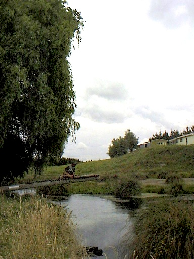
あの日斉藤さんは、その「桟橋」の上に腰を下ろし、静かにいざり登っていった。上から偵察していると、ちょうど射程内にライズが発生したらしく、ラインを引き出してフォルスキャストを始めた。２回目くらいのプレゼンテーションで見事鱒がフライを咥え、その１尾を釣り上げた。桟橋から降りてランディングしたのだったろうか、すでに記憶があやふやで定かでは無い。
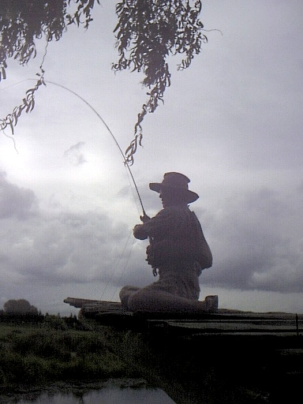
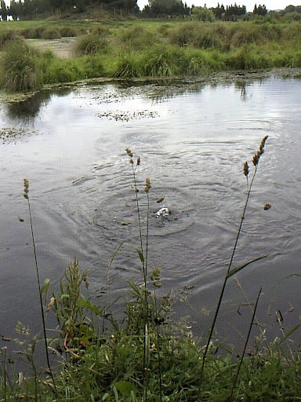
さらにライズを探していると、珍しく直線の区間になり、何とか僕でも届きそうな辺りで水面に輪っかが広がる。あの頃は、一応「留学中」ということで、さすがにフライタイイングの道具は日本から持って来ていなかったので、ハミルトンの釣り具店で購入して、今日の１尾目を首尾良く掛けることができた焦げ茶色のアダムスっぽいドライフライを投げてみた。流れに立ち込むと視点が低くなり、鱒の姿は完全に見失っていたが、フライが水面に落ちてから、流れのスピードに合わせて余分なラインを手繰り寄せてくる。フライラインとリーダーの繋ぎ目が見えるほど近くまでドリフトしてきたところで、ふいにラインの先端が上流へスッと動いた。
『！？.....』
反射的にロッドを立てラインを引くと、ずっしりとした手応えがグングンとロッドを曲げ、そのまま上流へ動いて行く。急いでラインをリールに巻き入れドラグに頼りつつファイトが始まる。なんとか上流への疾走は止めることができたが、一転下流へ向かった鱒に藻の中へと潜られてしまう。ティペットが切れないよう加減しながら、グィッ、グィッと断続的に力を加えていると、我慢しきれなくなった鱒が藻から出て流れの中で最後の抵抗を始めた。
なぜあの日は、ランディングネットを背中に付けていなかったのか、今も不思議だが、何とかそのレインボーを右手に抱くことができた。およそ45cmほどの美しい鱒だった。ふと岸辺を見ると、高い土手の上から斉藤さんが一眼レフを構え、とっておきの１枚を撮してくれた。
斉藤さんが惚れ込むだけあって、そのスプリングクリークは本当に素晴らしい川だった。
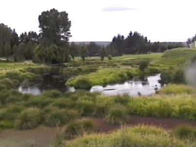
やがて夕暮れが迫ってきて、僕たちは牧場の川を後にした。多忙な中、一日僕たちを案内してくれた斉藤さんにお礼を述べ、川本君と僕はタウポからハミルトンまでの長い帰途についた。
その翌月、僕は不運にも持病である躁鬱病が再発してしまった。日頃からお世話になっていた同居人のノボル君とスミコさん、小林さん夫妻、辰巳さん夫妻から多大な支援を受け、ハミルトン市内の病院に入院することができた。外国での入院生活、それも精神病院への入院は、それはそれでなかなか得がたい体験であり、いろいろと勉強になることが多かった。
一番嬉しかったのは、閉鎖病棟内にあったカウンター（今でもあのコーナーの役目がわからないのだが）で、医療スタッフの１人が患者さん達を見守るかたわら、おもむろにバイスを机に据え、マテリアルを箱から取り出し、フライを巻き始めるのを目撃した時であった。（笑）
そして、2002年の暮れになり、家族旅行を兼ねて長兄が僕の将来を心配して日本から迎えに来てくれたのだった。やや不本意ではあったが、やむを得ず志半ばにして帰国することを決めた。
2003年の正月から故郷の実家で父と暮らし始めた僕は、３年ほど習っただけではあったが、なんとか英語を活かせる翻訳業をやってみようと考え、すでに翻訳の仕事をバリバリとこなされていた斉藤さんに、メールでこの仕事について質問し、回答を頂くことができた。さらに、斉藤さんが苦学独学の末に得た、翻訳のコツをまとめてわざわざ手紙で送って下さった。
斉藤さんは現在、主として医療関連の学術論文の翻訳業をしておられる。僕は読むだけアカウントを取得して、ツイッターにて斉藤さんの近況を伺っている次第である。
この一文を書くにあたり、古い Mac からサルベージした昔のメールデータを検索し、斉藤さんから頂いたメールや僕が送信した数々のメールを読み返すうちに、ニュージーランド留学時代には、斉藤さんを始め、実に多くの人とのご縁があり、ご支援を受けていたのだなあと改めて感謝した。
今一度、タウポ湖畔に住まわれる斉藤完治さんに御礼を述べ、さらなるご活躍を祈りたい。
エッセイ 目次へ
サイトマップ
ホームへ
お問い合わせ